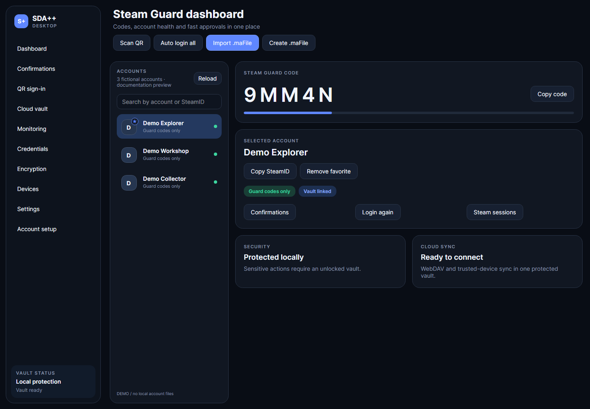
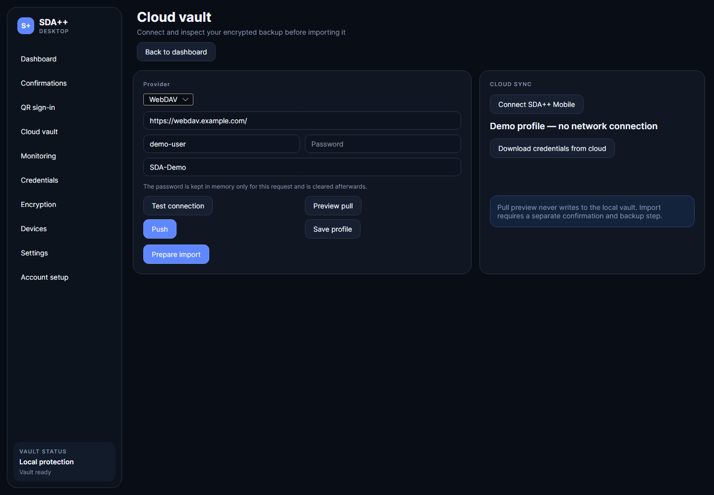
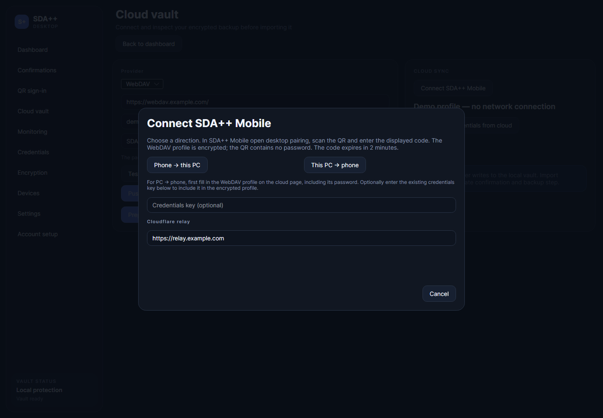
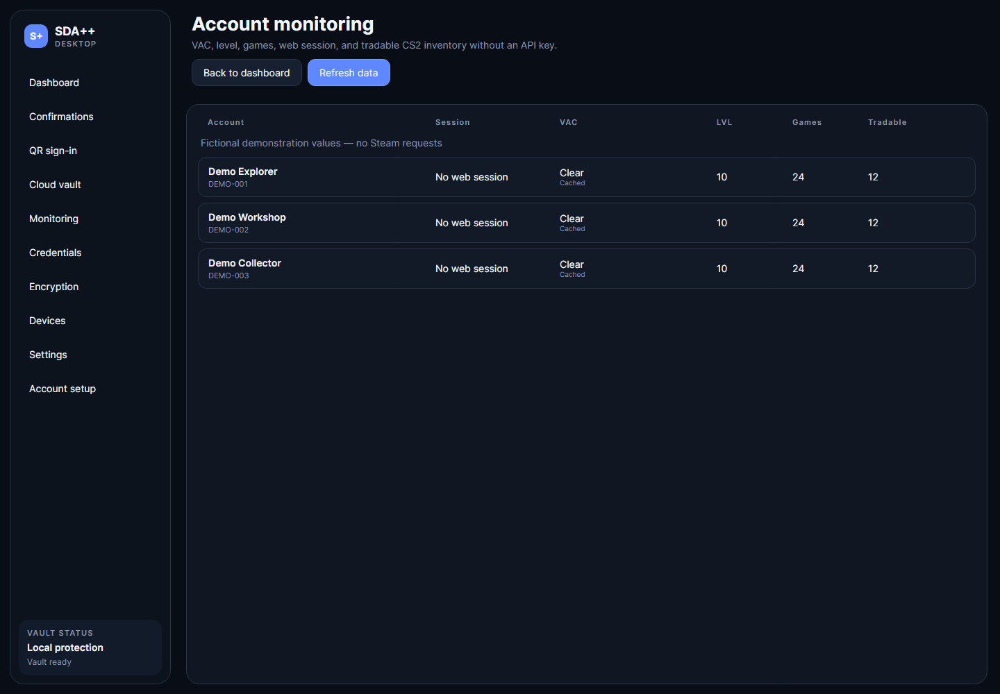

SDA++
Avalonia Desktop
Steam Guard, confirmations, QR sign-in and encrypted cloud backups in one desktop interface.
Avalonia is now the main desktop. WinForms remains legacy source. All screenshots below use fictional demonstration data.

Account tools, together
- Guard codes, account search, favorites and local SDA folder import.
- Steam confirmations and screen QR sign-in.
- Encrypted credentials, cloud download and batch session recovery.
- Session, ban, level, game and inventory monitoring.
- English/Russian interface, themes and Windows hotkeys.
Cloud backups
WebDAV, S3-compatible, Dropbox, OneDrive and Google Drive adapters. Preview and validate a backup before restoring it.

Connect SDA++ Mobile
Phone → PC or PC → Phone WebDAV setup with an encrypted exchange, temporary QR and separate code. Account files are restored separately.

Monitor your accounts

Start with a backup
Extract the full release ZIP into a new folder, launch SDA++.exe, then import your existing setup. Keep the original vault password and credentials key. No account data is shipped with the application.
Windows x64 is the supported release target. Live Android/provider combinations need environment-specific testing. Trusted-device command delivery remains under development. Not affiliated with Valve.